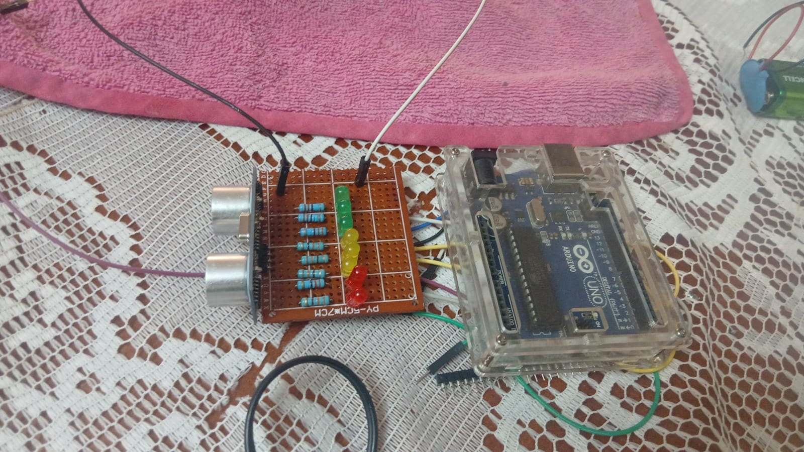
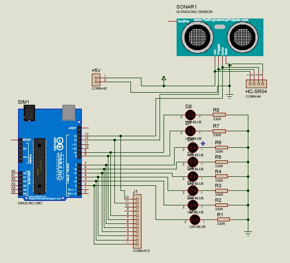
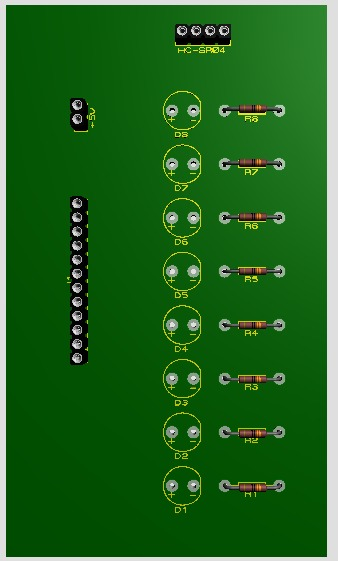

Universidad Nacional de Chimborazo
Facultad de Ciencias de la Educación, Humanas y Tecnologías
CARRERA DE PEDAGOGÍA DE LAS CIENCIAS EXPERIMENTALES:
MATEMÁTICA Y LA FÍSICA
Mecánica de fluidos, oscilaciones y ondas
Titulo:Diseño e implementación de un material didáctico basado en circuitos electrónicos para la enseñanza del efecto Doppler
Una plataforma de consulta que reúne la fundamentación teórica, el prototipo electrónico, el uso de Phyphox y la ruta metodológica para demostrar experimentalmente cómo el movimiento relativo entre una fuente sonora y un observador modifica la frecuencia percibida.
Fundamentos pedagógicos y tecnológicos
Circuito electrónico educativo
Ondas sonoras y efecto Doppler
Medición con Phyphox
Bibliografía APA 7
Material didáctico en la enseñanza de la Física
Por qué un circuito y no solo una ecuación
Un material didáctico puede entenderse como un conjunto de recursos diseñados con una intención educativa específica, cuyo propósito es favorecer el aprendizaje mediante la interacción del estudiante con contenidos, herramientas y actividades que promueven la construcción del conocimiento. Estos recursos pueden ser físicos, digitales o una combinación de ambos, según los objetivos de aprendizaje planteados.
En la enseñanza de la Física esta idea cobra especial relevancia porque muchos fenómenos —como el efecto Doppler— exigen modelos, simulaciones o experiencias que permitan comprender conceptos abstractos mediante la observación y la manipulación directa, en lugar de quedarse únicamente en la representación matemática.
Aprendizaje significativo y experimentación
El material didáctico experimental favorece un aprendizaje significativo porque permite que el estudiante relacione sus conocimientos previos con los nuevos conceptos adquiridos mediante la experiencia directa. La manipulación de instrumentos y la interpretación de resultados contribuyen al desarrollo del pensamiento científico y del razonamiento crítico, complementando la enseñanza tradicional basada únicamente en ecuaciones.
Beneficios frente a la enseñanza puramente teórica
- El estudiante deja de ser receptor pasivo y participa activamente en la comprobación de principios físicos.
- Se desarrollan habilidades de observación, medición y análisis de datos.
- Se fortalece la relación entre el modelo matemático y la evidencia experimental.
Tecnologías educativas aplicadas a la Física
Del sensor del bolsillo al laboratorio de datos
Las tecnologías educativas son el conjunto de herramientas, recursos y estrategias que permiten mejorar los procesos de enseñanza-aprendizaje mediante la incorporación de medios digitales y dispositivos tecnológicos. En la educación científica, su aplicación crea ambientes interactivos donde el estudiante explora fenómenos, obtiene datos y construye explicaciones basadas en evidencia.
Estas herramientas han permitido superar limitaciones de los métodos tradicionales al ofrecer nuevas formas de representar fenómenos físicos mediante simulaciones, sensores, plataformas digitales y sistemas de adquisición de datos, además de impulsar metodologías activas como el aprendizaje basado en proyectos y la experimentación asistida por computadora.
El teléfono inteligente como instrumento científico
Los teléfonos inteligentes incorporan sensores —micrófono, acelerómetro, magnetómetro— que pueden emplearse como instrumentos de medición dentro de actividades educativas. Aplicaciones como Phyphox aprovechan estos sensores para realizar experimentos relacionados con sonido, movimiento y otras magnitudes físicas, convirtiendo un dispositivo cotidiano en un laboratorio portátil.
Circuitos electrónicos educativos
Arquitectura del generador de señal sonora
Los circuitos electrónicos educativos son sistemas diseñados para representar y controlar fenómenos físicos mediante componentes accesibles. Permiten un aprendizaje interdisciplinario porque integran conocimientos de física, electrónica, programación y tecnología, relacionando conceptos teóricos con aplicaciones reales presentes en dispositivos cotidianos.
Los microcontroladores y módulos electrónicos han ganado terreno en el ámbito educativo por su bajo costo, facilidad de programación y capacidad de interactuar con sensores y actuadores. Plataformas como Arduino permiten diseñar sistemas experimentales capaces de generar señales, registrar mediciones y controlar procesos físicos.
Componentes del sistema
| Componente | Función dentro del prototipo |
|---|---|
| Microcontrolador | Procesa información y controla el sistema. |
| Fuente sonora | Genera ondas acústicas mediante una señal eléctrica. |
| Sensores | Miden variables físicas y las convierten en señales eléctricas. |
| Módulos de comunicación | Transfieren datos entre dispositivos electrónicos. |
| Elementos de visualización | Facilitan la interpretación de resultados mediante indicadores o pantallas. |
En el material propuesto, el circuito cumple la función de generar una señal sonora con características controladas, de modo que sea posible analizar la variación de frecuencia producida por el movimiento relativo entre la fuente y el observador: un sistema electrónico genera una frecuencia conocida mientras Phyphox registra la frecuencia percibida, permitiendo comparar el resultado experimental con el modelo teórico.
Ondas sonoras
Las variables que hacen posible medir el Doppler
Las ondas sonoras son perturbaciones mecánicas que se propagan en un medio material debido a la vibración de sus partículas, generando regiones de compresión y rarefacción que transportan energía desde una fuente hasta un receptor. Por su naturaleza mecánica, el sonido no puede propagarse en el vacío. Una fuente sonora —un parlante o un buzzer electrónico— genera una onda longitudinal, en la que la dirección de vibración coincide con la dirección de propagación de la energía.
Frecuencia
La frecuencia es el número de ciclos que realiza una onda por segundo, medida en hertz (Hz); en el sonido determina la altura tonal, distinguiendo sonidos graves de agudos.
f es la frecuencia y T el
período de oscilación.
v: velocidad de propagación · f:
frecuencia · λ: longitud de onda.
Esta última magnitud, la frecuencia, es la variable central del efecto Doppler: el fenómeno consiste precisamente en la variación aparente de la frecuencia observada debido al movimiento relativo entre fuente y receptor.
Longitud de onda
v permanece constante,
λ disminuye. En el efecto Doppler, el movimiento de
la fuente altera la separación entre frentes de onda.
Intensidad sonora y decibelios
La intensidad sonora cuantifica la energía acústica que atraviesa una unidad de área en un intervalo de tiempo.
I: intensidad (W/m²) · P: potencia
acústica · A: área · r: distancia a la
fuente puntual.
Debido a que el oído humano percibe un rango de intensidades extremadamente amplio, se usa una escala logarítmica: el nivel de intensidad sonora, en decibelios (dB).
β: nivel de intensidad (dB) ·
I₀ = 1×10⁻¹² W/m²: intensidad de referencia, umbral
de audición a ≈1000 Hz.
Un incremento de 10 dB corresponde aproximadamente a multiplicar por diez la intensidad física del sonido. Es importante distinguir intensidad de sonoridad: la primera es una medida física objetiva; la segunda depende de la respuesta del oído a distintas frecuencias. En el análisis del efecto Doppler, la variable relevante es la frecuencia, mientras que la intensidad y los decibelios funcionan como recurso complementario de análisis de la señal.
Efecto Doppler
El corazón teórico del proyecto
El efecto Doppler es el cambio aparente de la frecuencia de una onda percibida por un observador cuando existe movimiento relativo entre la fuente emisora y el receptor. Descrito inicialmente por Christian Doppler en 1842, se aplica tanto a ondas mecánicas (el sonido) como a ondas electromagnéticas (la luz).
Un ejemplo cotidiano: mientras una ambulancia se aproxima, la sirena se percibe más aguda; tras pasar junto al observador, se percibe más grave — aunque la frecuencia emitida por la fuente no cambie en ningún momento.
Principio físico
Cuando la fuente está en reposo, las ondas se distribuyen uniformemente a su alrededor. Cuando se mueve, cada nuevo frente se origina desde una posición distinta, comprimiendo o separando los frentes de onda según la dirección del movimiento.
Ecuación general
f′: frecuencia observada · f:
frecuencia emitida · v: velocidad del sonido en el
medio · v₀: velocidad del observador ·
v_s: velocidad de la fuente.
- Signo + para el observador cuando se aproxima a la fuente; − cuando se aleja.
- Signo − para la fuente cuando se aproxima al observador; + cuando se aleja.
Caso particular: fuente en movimiento, observador en reposo
Este es el caso relevante para el prototipo, donde la fuente sonora se desplaza y el teléfono (observador) permanece fijo.
Comprobación experimental
La demostración se realiza mediante un circuito generador de sonido con frecuencia conocida y Phyphox como sistema de registro. El movimiento relativo entre la fuente y el receptor permite observar variaciones en la frecuencia registrada, comprobando el comportamiento predicho por la ecuación general. El análisis de frecuencia distingue este fenómeno de otros cambios acústicos: la intensidad o el nivel de decibelios pueden variar con la distancia, pero el efecto Doppler se caracteriza específicamente por la modificación de la frecuencia percibida.
Aplicaciones
- Medicina: ecografía Doppler para analizar el flujo sanguíneo.
- Astronomía: desplazamiento de frecuencia de la luz para inferir el movimiento relativo de estrellas y galaxias.
- Radares de velocidad, meteorología y navegación: determinación de velocidades mediante el cambio de frecuencia entre la señal emitida y la recibida.
Implementación del material didáctico
Del diseño a la construcción del prototipo
- Diseño del prototipo y justificación de componentes.
- Procedimiento de montaje paso a paso.
- Pruebas realizadas y ajustes durante la construcción.
- Funcionamiento final verificado.



Uso de Phyphox
El laboratorio dentro del teléfono
Phyphox es una aplicación móvil desarrollada por la Universidad RWTH Aachen que permite usar los sensores incorporados en los teléfonos inteligentes como herramientas de medición para experimentos físicos, transformando el dispositivo en un laboratorio portátil capaz de registrar, procesar y analizar magnitudes físicas en tiempo real.
Funciones principales
- Registro de datos de sensores internos del dispositivo.
- Visualización gráfica de mediciones en tiempo real.
- Análisis matemático de señales físicas.
- Exportación de datos para procesamiento posterior.
- Creación de experimentos personalizados.
El micrófono como sensor acústico
El micrófono actúa como transductor: convierte las variaciones de presión de una onda sonora en una señal eléctrica procesable digitalmente. En Phyphox, esto habilita tres experimentos acústicos relevantes:
| Experimento | Qué mide |
|---|---|
| Audio Spectrum | Distribución de frecuencias de la señal (vía Transformada de Fourier). |
| Audio Amplitude | Variación de amplitud / nivel de la señal captada. |
| Autocorrelation | Estimación de la frecuencia dominante de la señal. |
Análisis del espectro de frecuencia
El análisis espectral identifica la frecuencia predominante de una onda, permitiendo comparar la frecuencia emitida por la fuente con la registrada por el receptor:
f′ > f. Si se aleja:
f′ < f.
Procedimiento experimental sugerido
Establecer una frecuencia conocida y constante en el circuito generador.
Iniciar el experimento Audio Spectrum o Autocorrelation.
Colocar el teléfono como punto fijo de recepción.
Registrar la frecuencia observada durante el acercamiento.
Registrar nuevamente la frecuencia observada.
Contrastar los valores obtenidos con la frecuencia emitida original.
Se espera que la frecuencia observada aumente durante el acercamiento y disminuya durante el alejamiento, confirmando el comportamiento predicho por la ecuación del efecto Doppler. Cabe señalar que la calibración del micrófono, el modelo del dispositivo y las condiciones del entorno afectan la precisión, por lo que Phyphox se considera una herramienta educativa y experimental antes que un instrumento profesional de medición.
Metodología
Ruta metodológica de la investigación
La presente investigación se desarrolló con el propósito de diseñar, implementar y evaluar un material didáctico basado en circuitos electrónicos para la enseñanza del efecto Doppler. La metodología empleada permitió integrar procedimientos de investigación que facilitaron el análisis tanto del funcionamiento del recurso didáctico como de la percepción de los estudiantes durante su implementación.
Enfoque de la investigación
La investigación posee un enfoque mixto, ya que combina métodos cuantitativos y cualitativos. El componente cuantitativo permitió evaluar la aceptación del material didáctico mediante encuestas, mientras que el enfoque cualitativo facilitó analizar la experiencia, participación e interacción de los estudiantes durante las actividades experimentales.
Diseño de la investigación
Se empleó un diseño no experimental de campo, debido a que el estudio se desarrolló en un contexto educativo real sin manipular las variables de investigación. El proceso comprendió el diseño, implementación y evaluación del material didáctico durante una clase de Física.
Nivel de la investigación
El estudio corresponde a un nivel descriptivo, ya que busca describir las características, funcionamiento y utilidad del material didáctico, así como la percepción de los estudiantes respecto a su utilización en el proceso de enseñanza-aprendizaje.
Tipo de investigación
| Clasificación | Descripción |
|---|---|
| Aplicada | Busca solucionar una necesidad educativa mediante el diseño de un material didáctico para la enseñanza del efecto Doppler. |
| De campo | La información se obtuvo directamente en el contexto educativo donde se implementó el recurso didáctico. |
| Transversal | La recolección de datos se realizó en un único periodo de tiempo durante la implementación del proyecto. |
Población y muestra
Tanto la población como la muestra estuvieron conformadas por los estudiantes de quinto semestre de la carrera de Pedagogía de la Matemática y la Física de la Universidad Nacional de Chimborazo, quienes participaron en la implementación y evaluación del material didáctico.
Técnicas e instrumentos
| Técnica | Instrumento |
|---|---|
| Observación directa | Guía de observación |
| Encuesta | Cuestionario con escala de Likert |
La observación permitió registrar el desempeño y la interacción de los estudiantes durante el uso del material didáctico, mientras que la encuesta permitió evaluar el nivel de satisfacción, la comprensión del tema y la utilidad del recurso para el aprendizaje.
Procesamiento de datos
Los datos cuantitativos fueron organizados y analizados mediante Microsoft Excel, utilizando tablas y gráficos de frecuencias y porcentajes. La información obtenida mediante la observación fue interpretada cualitativamente para analizar el comportamiento, participación y experiencia de los estudiantes durante la implementación del material didáctico.
- Enfoque: Mixto (cuantitativo y cualitativo).
- Diseño: No experimental de campo.
- Nivel: Descriptivo.
- Tipo: Aplicada, de campo y transversal.
- Población y muestra: Estudiantes de quinto semestre de Pedagogía de la Matemática y la Física (UNACH).
- Técnicas: Observación directa y encuesta.
- Instrumentos: Guía de observación y cuestionario con escala de Likert.
- Procesamiento: Análisis descriptivo e interpretación cualitativa.
🎥 Demostración del funcionamiento
En el siguiente video se observa el funcionamiento del material didáctico implementado para la demostración del efecto Doppler. Durante la prueba se evidencia la respuesta del sensor ultrasónico y la activación progresiva de los indicadores LED conforme varía la distancia del objeto.
Bibliografía
Referencias en formato APA 7
Libros
Artículos científicos
Recursos digitales y documentación técnica
📷 Evidencias del proyecto
A continuación se presentan las principales evidencias del diseño, simulación, construcción e implementación del material didáctico basado en circuitos electrónicos para la enseñanza del efecto Doppler.